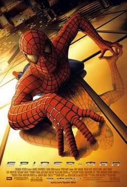
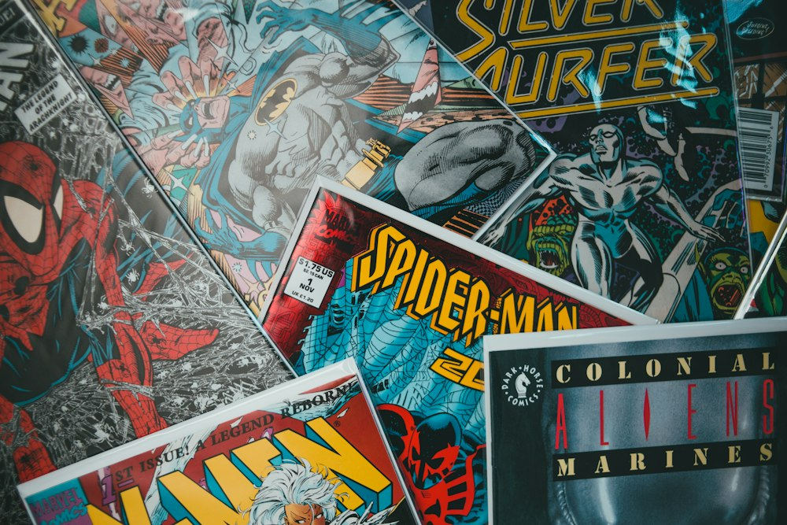
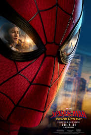

Classic films
Start with Tobey’s first swing and see how the Raimi era built the friendly neighborhood hero.
Browse movies
Friendly neighborhood hero
With great power comes great responsibility. Explore the story, powers, films, and photos of Marvel’s web-slinger.
Origin
Peter Parker is a student from Queens who was bitten by a radioactive spider. That bite gave him the strength, speed, and senses of a spider — and a duty to protect New York City.
Behind the mask he is still a kid with homework, rent, and a sense of humor. On the rooftops he becomes the hero who swings between skyscrapers and stops crime before the city even knows it started.

Abilities
Classic spider abilities plus homemade gadgets. Here is a quick list of what he brings to a fight.
On screen
A simple table of popular film eras — title, year, and main actor.
| Film / Era | Year | Spider-Man Actor | Tone |
|---|---|---|---|
| Spider-Man (Sam Raimi) | 2002 | Tobey Maguire | Classic origin drama |
| The Amazing Spider-Man | 2012 | Andrew Garfield | Gritty & emotional |
| Spider-Man: Homecoming | 2017 | Tom Holland | MCU high-school hero |
| Spider-Man: Across the Spider-Verse | 2023 | Shameik Moore (voice) | Animated multiverse |
Flexbox cards
Three equal-height cards in a Flexbox row — image, title, text, and a button on each.

Start with Tobey’s first swing and see how the Raimi era built the friendly neighborhood hero.
Browse movies
Ali and Arlan built this fan site — bios, hobbies, and how we split the Assignment pages.
About team
Drop a note about a favorite suit, a missing film, or a gallery photo idea for the next update.
Contact usCSS Grid gallery
Nine images in equal Grid columns. Hover a tile to reveal the caption overlay.



From Queens rooftops to Manhattan glass towers — the city is his playground and his responsibility.